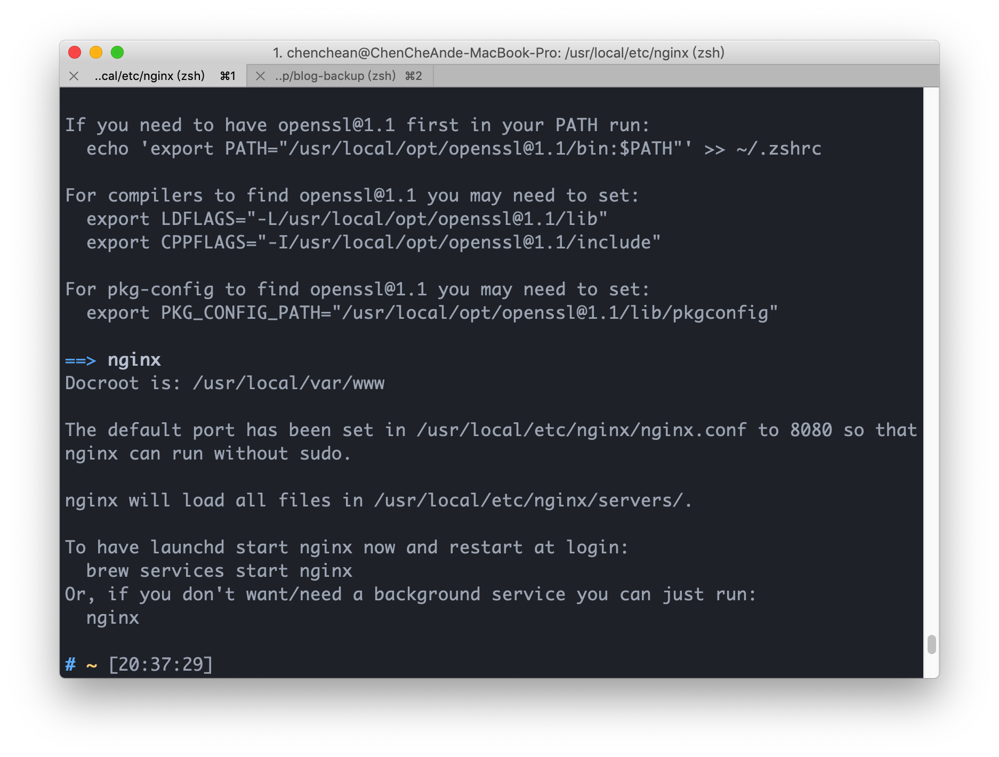

<!DOCTYPE html>
<html lang="en">
<head>
  <meta charset="UTF-8">
<meta name="viewport" content="width=device-width, initial-scale=1, maximum-scale=2">
<meta name="theme-color" content="#222">
<meta name="generator" content="Hexo 5.4.0">
  <link rel="apple-touch-icon" sizes="180x180" href="/images/apple-touch-icon-next.png">
  <link rel="icon" type="image/png" sizes="32x32" href="/images/favicon-32x32-next.png">
  <link rel="icon" type="image/png" sizes="16x16" href="/images/favicon-16x16-next.png">
  <link rel="mask-icon" href="/images/logo.svg" color="#222">

<link rel="stylesheet" href="/css/main.css">


<link rel="stylesheet" href="/lib/font-awesome/css/all.min.css">

<script id="hexo-configurations">
    var NexT = window.NexT || {};
    var CONFIG = {"hostname":"dasre.github.io","root":"/","scheme":"Mist","version":"7.8.0","exturl":false,"sidebar":{"position":"left","display":"post","padding":18,"offset":12,"onmobile":false},"copycode":{"enable":true,"show_result":false,"style":null},"back2top":{"enable":true,"sidebar":false,"scrollpercent":false},"bookmark":{"enable":false,"color":"#222","save":"auto"},"fancybox":false,"mediumzoom":false,"lazyload":false,"pangu":false,"comments":{"style":"tabs","active":null,"storage":true,"lazyload":false,"nav":null},"algolia":{"hits":{"per_page":10},"labels":{"input_placeholder":"Search for Posts","hits_empty":"We didn't find any results for the search: ${query}","hits_stats":"${hits} results found in ${time} ms"}},"localsearch":{"enable":false,"trigger":"auto","top_n_per_article":1,"unescape":false,"preload":false},"motion":{"enable":true,"async":false,"transition":{"post_block":"fadeIn","post_header":"slideDownIn","post_body":"slideDownIn","coll_header":"slideLeftIn","sidebar":"slideUpIn"}}};
  </script>

  <meta name="description" content="nginx在mac安裝以及簡易文件說明在mac上安裝nginx可以使用brew進行安裝 1brew install nginx 安裝完可以下 1nginx 來啟動服務 從安裝完的畫面我們可以知道nginx.conf這個重要的設定文件路徑為&#x2F;usr&#x2F;local&#x2F;etc&#x2F;nginx&#x2F;nginx.conf  nginx.conf我們先以原始的內容做說明下方的#及為註解的部分 12345678910111">
<meta property="og:type" content="article">
<meta property="og:title" content="nginx">
<meta property="og:url" content="https://dasre.github.io/2020/01/01/nginx/index.html">
<meta property="og:site_name" content="Andy Blog">
<meta property="og:description" content="nginx在mac安裝以及簡易文件說明在mac上安裝nginx可以使用brew進行安裝 1brew install nginx 安裝完可以下 1nginx 來啟動服務 從安裝完的畫面我們可以知道nginx.conf這個重要的設定文件路徑為&#x2F;usr&#x2F;local&#x2F;etc&#x2F;nginx&#x2F;nginx.conf  nginx.conf我們先以原始的內容做說明下方的#及為註解的部分 12345678910111">
<meta property="og:locale" content="en_US">
<meta property="og:image" content="https://dasre.github.io/2020/01/01/nginx/1.png">
<meta property="article:published_time" content="2020-01-01T12:40:50.000Z">
<meta property="article:modified_time" content="2022-02-28T14:44:58.183Z">
<meta property="article:author" content="Andy Chen">
<meta name="twitter:card" content="summary">
<meta name="twitter:image" content="https://dasre.github.io/2020/01/01/nginx/1.png">

<link rel="canonical" href="https://dasre.github.io/2020/01/01/nginx/">


<script id="page-configurations">
  // https://hexo.io/docs/variables.html
  CONFIG.page = {
    sidebar: "",
    isHome : false,
    isPost : true,
    lang   : 'en'
  };
</script>

  <title>nginx | Andy Blog</title>
  


  <noscript>
  <style>
  .use-motion .brand,
  .use-motion .menu-item,
  .sidebar-inner,
  .use-motion .post-block,
  .use-motion .pagination,
  .use-motion .comments,
  .use-motion .post-header,
  .use-motion .post-body,
  .use-motion .collection-header { opacity: initial; }

  .use-motion .site-title,
  .use-motion .site-subtitle {
    opacity: initial;
    top: initial;
  }

  .use-motion .logo-line-before i { left: initial; }
  .use-motion .logo-line-after i { right: initial; }
  </style>
</noscript>

</head>

<body itemscope itemtype="http://schema.org/WebPage">
  <div class="container use-motion">
    <div class="headband"></div>

    <header class="header" itemscope itemtype="http://schema.org/WPHeader">
      <div class="header-inner"><div class="site-brand-container">
  <div class="site-nav-toggle">
    <div class="toggle" aria-label="Toggle navigation bar">
      <span class="toggle-line toggle-line-first"></span>
      <span class="toggle-line toggle-line-middle"></span>
      <span class="toggle-line toggle-line-last"></span>
    </div>
  </div>

  <div class="site-meta">

    <a href="/" class="brand" rel="start">
      <span class="logo-line-before"><i></i></span>
      <h1 class="site-title">Andy Blog</h1>
      <span class="logo-line-after"><i></i></span>
    </a>
  </div>

  <div class="site-nav-right">
    <div class="toggle popup-trigger">
    </div>
  </div>
</div>


<nav class="site-nav">
  <ul id="menu" class="main-menu menu">
        <li class="menu-item menu-item-home">

    <a href="/" rel="section"><i class="fa fa-home fa-fw"></i>Home</a>

  </li>
        <li class="menu-item menu-item-tags">

    <a href="/tags/" rel="section"><i class="fa fa-tags fa-fw"></i>Tags</a>

  </li>
        <li class="menu-item menu-item-archives">

    <a href="/archives/" rel="section"><i class="fa fa-archive fa-fw"></i>Archives</a>

  </li>
  </ul>
</nav>


</div>
    </header>

    
  <div class="back-to-top">
    <i class="fa fa-arrow-up"></i>
    <span>0%</span>
  </div>


    <main class="main">
      <div class="main-inner">
        <div class="content-wrap">
          

          <div class="content post posts-expand">
            

    
  
  
  <article itemscope itemtype="http://schema.org/Article" class="post-block" lang="en">
    <link itemprop="mainEntityOfPage" href="https://dasre.github.io/2020/01/01/nginx/">

    <span hidden itemprop="author" itemscope itemtype="http://schema.org/Person">
      <meta itemprop="image" content="/images/avatar.gif">
      <meta itemprop="name" content="Andy Chen">
      <meta itemprop="description" content="">
    </span>

    <span hidden itemprop="publisher" itemscope itemtype="http://schema.org/Organization">
      <meta itemprop="name" content="Andy Blog">
    </span>
      <header class="post-header">
        <h1 class="post-title" itemprop="name headline">
          nginx
        </h1>

        <div class="post-meta">
            <span class="post-meta-item">
              <span class="post-meta-item-icon">
                <i class="far fa-calendar"></i>
              </span>
              <span class="post-meta-item-text">Posted on</span>

              <time title="Created: 2020-01-01 20:40:50" itemprop="dateCreated datePublished" datetime="2020-01-01T20:40:50+08:00">2020-01-01</time>
            </span>
              <span class="post-meta-item">
                <span class="post-meta-item-icon">
                  <i class="far fa-calendar-check"></i>
                </span>
                <span class="post-meta-item-text">Edited on</span>
                <time title="Modified: 2022-02-28 22:44:58" itemprop="dateModified" datetime="2022-02-28T22:44:58+08:00">2022-02-28</time>
              </span>

          
  
  <span class="post-meta-item">
    
      <span class="post-meta-item-icon">
        <i class="far fa-comment"></i>
      </span>
      <span class="post-meta-item-text">Disqus: </span>
    
    <a title="disqus" href="/2020/01/01/nginx/#disqus_thread" itemprop="discussionUrl">
      <span class="post-comments-count disqus-comment-count" data-disqus-identifier="2020/01/01/nginx/" itemprop="commentCount"></span>
    </a>
  </span>
  
  

        </div>
      </header>

    
    
    
    <div class="post-body" itemprop="articleBody">

      
        <h1 id="nginx在mac安裝以及簡易文件說明"><a href="#nginx在mac安裝以及簡易文件說明" class="headerlink" title="nginx在mac安裝以及簡易文件說明"></a>nginx在mac安裝以及簡易文件說明</h1><p>在mac上安裝nginx可以使用brew進行安裝</p>
<figure class="highlight shell"><table><tr><td class="gutter"><pre><span class="line">1</span><br></pre></td><td class="code"><pre><span class="line">brew install nginx</span><br></pre></td></tr></table></figure>
<p>安裝完可以下</p>
<figure class="highlight plain"><table><tr><td class="gutter"><pre><span class="line">1</span><br></pre></td><td class="code"><pre><span class="line">nginx</span><br></pre></td></tr></table></figure>
<p>來啟動服務<br></p>
<p>從安裝完的畫面我們可以知道<br>nginx.conf這個重要的設定文件路徑為/usr/local/etc/nginx/nginx.conf</p>
<hr>
<h2 id="nginx-conf"><a href="#nginx-conf" class="headerlink" title="nginx.conf"></a>nginx.conf</h2><p>我們先以原始的內容做說明<br>下方的#及為註解的部分</p>
<figure class="highlight text"><table><tr><td class="gutter"><pre><span class="line">1</span><br><span class="line">2</span><br><span class="line">3</span><br><span class="line">4</span><br><span class="line">5</span><br><span class="line">6</span><br><span class="line">7</span><br><span class="line">8</span><br><span class="line">9</span><br><span class="line">10</span><br><span class="line">11</span><br><span class="line">12</span><br><span class="line">13</span><br><span class="line">14</span><br><span class="line">15</span><br><span class="line">16</span><br><span class="line">17</span><br><span class="line">18</span><br><span class="line">19</span><br><span class="line">20</span><br><span class="line">21</span><br><span class="line">22</span><br><span class="line">23</span><br><span class="line">24</span><br><span class="line">25</span><br><span class="line">26</span><br><span class="line">27</span><br><span class="line">28</span><br><span class="line">29</span><br><span class="line">30</span><br><span class="line">31</span><br><span class="line">32</span><br><span class="line">33</span><br><span class="line">34</span><br><span class="line">35</span><br><span class="line">36</span><br><span class="line">37</span><br><span class="line">38</span><br><span class="line">39</span><br><span class="line">40</span><br><span class="line">41</span><br><span class="line">42</span><br><span class="line">43</span><br><span class="line">44</span><br><span class="line">45</span><br><span class="line">46</span><br><span class="line">47</span><br><span class="line">48</span><br><span class="line">49</span><br><span class="line">50</span><br><span class="line">51</span><br><span class="line">52</span><br><span class="line">53</span><br><span class="line">54</span><br><span class="line">55</span><br><span class="line">56</span><br><span class="line">57</span><br><span class="line">58</span><br><span class="line">59</span><br><span class="line">60</span><br><span class="line">61</span><br><span class="line">62</span><br><span class="line">63</span><br><span class="line">64</span><br><span class="line">65</span><br><span class="line">66</span><br><span class="line">67</span><br><span class="line">68</span><br><span class="line">69</span><br><span class="line">70</span><br><span class="line">71</span><br><span class="line">72</span><br><span class="line">73</span><br><span class="line">74</span><br><span class="line">75</span><br><span class="line">76</span><br><span class="line">77</span><br><span class="line">78</span><br><span class="line">79</span><br><span class="line">80</span><br><span class="line">81</span><br><span class="line">82</span><br><span class="line">83</span><br><span class="line">84</span><br><span class="line">85</span><br><span class="line">86</span><br><span class="line">87</span><br><span class="line">88</span><br><span class="line">89</span><br><span class="line">90</span><br><span class="line">91</span><br><span class="line">92</span><br><span class="line">93</span><br><span class="line">94</span><br><span class="line">95</span><br><span class="line">96</span><br><span class="line">97</span><br><span class="line">98</span><br><span class="line">99</span><br><span class="line">100</span><br><span class="line">101</span><br><span class="line">102</span><br><span class="line">103</span><br><span class="line">104</span><br><span class="line">105</span><br><span class="line">106</span><br><span class="line">107</span><br><span class="line">108</span><br><span class="line">109</span><br><span class="line">110</span><br><span class="line">111</span><br><span class="line">112</span><br><span class="line">113</span><br><span class="line">114</span><br><span class="line">115</span><br><span class="line">116</span><br><span class="line">117</span><br><span class="line">118</span><br><span class="line">119</span><br><span class="line">120</span><br><span class="line">121</span><br><span class="line">122</span><br><span class="line">123</span><br><span class="line">124</span><br><span class="line">125</span><br><span class="line">126</span><br><span class="line">127</span><br><span class="line">128</span><br><span class="line">129</span><br><span class="line">130</span><br><span class="line">131</span><br><span class="line">132</span><br><span class="line">133</span><br><span class="line">134</span><br><span class="line">135</span><br><span class="line">136</span><br><span class="line">137</span><br><span class="line">138</span><br><span class="line">139</span><br><span class="line">140</span><br><span class="line">141</span><br><span class="line">142</span><br><span class="line">143</span><br></pre></td><td class="code"><pre><span class="line">#基本上就是啟動這個服務的用戶是誰，通常可以不進行設定</span><br><span class="line">#user  nobody;</span><br><span class="line"></span><br><span class="line">#通常在直接作為伺服器的server上面，會將worker_processes設為server CPU的core數量</span><br><span class="line">#也可以直接使用auto 讓Nginx進行偵測</span><br><span class="line">worker_processes  1;</span><br><span class="line"></span><br><span class="line">#下方為Nginx的錯誤日誌</span><br><span class="line">#前方的error_log為關鍵字，不可更改</span><br><span class="line">#logs/error.log為存放錯誤日誌的位置</span><br><span class="line">#後方的notice info為錯誤日誌的等級，其關鍵字有[debug, info, notice, warn, error, crit, alert, emerg]，debug為紀錄最詳細內容的關鍵字</span><br><span class="line">#更詳細的內容可以參考nginx docs error_log的介紹</span><br><span class="line">#error_log  logs/error.log;</span><br><span class="line">#error_log  logs/error.log  notice;</span><br><span class="line">#error_log  logs/error.log  info;</span><br><span class="line"></span><br><span class="line">#官方的文件是指&quot;Defines a file that will store the process ID of the main process&quot; 個人是很少用到</span><br><span class="line">#pid        logs/nginx.pid;</span><br><span class="line"></span><br><span class="line">events &#123;</span><br><span class="line">    #每個worker同時可以處理多少連線</span><br><span class="line">    worker_connections  1024;</span><br><span class="line">&#125;</span><br><span class="line"></span><br><span class="line"></span><br><span class="line">http &#123;</span><br><span class="line"></span><br><span class="line">    #透過include mime.types這隻檔案來設定MIME的設定</span><br><span class="line">    include       mime.types;</span><br><span class="line">    #HTTP 裡面Content-Type的一種</span><br><span class="line">    default_type  application/octet-stream;</span><br><span class="line"></span><br><span class="line">    #紀錄的格式</span><br><span class="line">    #log_format  main  &#x27;$remote_addr - $remote_user [$time_local] &quot;$request&quot; &#x27;</span><br><span class="line">    #                  &#x27;$status $body_bytes_sent &quot;$http_referer&quot; &#x27;</span><br><span class="line">    #                  &#x27;&quot;$http_user_agent&quot; &quot;$http_x_forwarded_for&quot;&#x27;;</span><br><span class="line"></span><br><span class="line">    #紀錄的位置</span><br><span class="line">    #access_log  logs/access.log  main;</span><br><span class="line"></span><br><span class="line">    #TCP優化部分</span><br><span class="line">    sendfile        on;</span><br><span class="line">    #tcp_nopush     on;</span><br><span class="line"></span><br><span class="line">    #keepalive_timeout  0;</span><br><span class="line">    keepalive_timeout  65;</span><br><span class="line"></span><br><span class="line">    #開啟gzip壓縮</span><br><span class="line">    #gzip  on;</span><br><span class="line"></span><br><span class="line">    #server部分主要設定我們虛擬主機的設定</span><br><span class="line">    #server部分可以包成檔案，如xxx.conf</span><br><span class="line">    #並放置在/etc/nginx/conf.d 資料架下</span><br><span class="line">    #並透過include /etc/nginx/conf.d/*.conf 將全部.conf欓讀入，</span><br><span class="line">    #同時也可以做到多個虛擬主機的配置</span><br><span class="line">    server &#123;</span><br><span class="line">        # 監聽的IP和port number</span><br><span class="line">        listen       8080;</span><br><span class="line">        #網域名稱</span><br><span class="line">        server_name  localhost;</span><br><span class="line"></span><br><span class="line">        #charset koi8-r;</span><br><span class="line"></span><br><span class="line">        #access_log  logs/host.access.log  main;</span><br><span class="line"></span><br><span class="line">        //默認的位置和開啟的檔案</span><br><span class="line">        location / &#123;</span><br><span class="line">            root   html;</span><br><span class="line">            index  index.html index.htm;</span><br><span class="line">        &#125;</span><br><span class="line"></span><br><span class="line">        #error_page  404              /404.html;</span><br><span class="line"></span><br><span class="line">        # redirect server error pages to the static page /50x.html</span><br><span class="line">        #</span><br><span class="line">        #錯誤狀態時，要顯示什麼頁面</span><br><span class="line">        error_page   500 502 503 504  /50x.html;</span><br><span class="line">        location = /50x.html &#123;</span><br><span class="line">            root   html;</span><br><span class="line">        &#125;</span><br><span class="line"></span><br><span class="line">        # proxy the PHP scripts to Apache listening on 127.0.0.1:80</span><br><span class="line">        #</span><br><span class="line">        #location ~ \.php$ &#123;</span><br><span class="line">        #    proxy_pass   http://127.0.0.1;</span><br><span class="line">        #&#125;</span><br><span class="line"></span><br><span class="line">        # pass the PHP scripts to FastCGI server listening on 127.0.0.1:9000</span><br><span class="line">        #</span><br><span class="line">        #location ~ \.php$ &#123;</span><br><span class="line">        #    root           html;</span><br><span class="line">        #    fastcgi_pass   127.0.0.1:9000;</span><br><span class="line">        #    fastcgi_index  index.php;</span><br><span class="line">        #    fastcgi_param  SCRIPT_FILENAME  /scripts$fastcgi_script_name;</span><br><span class="line">        #    include        fastcgi_params;</span><br><span class="line">        #&#125;</span><br><span class="line"></span><br><span class="line">        # deny access to .htaccess files, if Apache&#x27;s document root</span><br><span class="line">        # concurs with nginx&#x27;s one</span><br><span class="line">        #</span><br><span class="line">        #location ~ /\.ht &#123;</span><br><span class="line">        #    deny  all;</span><br><span class="line">        #&#125;</span><br><span class="line">    &#125;</span><br><span class="line"></span><br><span class="line"></span><br><span class="line">    # another virtual host using mix of IP-, name-, and port-based configuration</span><br><span class="line">    #</span><br><span class="line">    #server &#123;</span><br><span class="line">    #    listen       8000;</span><br><span class="line">    #    listen       somename:8080;</span><br><span class="line">    #    server_name  somename  alias  another.alias;</span><br><span class="line"></span><br><span class="line">    #    location / &#123;</span><br><span class="line">    #        root   html;</span><br><span class="line">    #        index  index.html index.htm;</span><br><span class="line">    #    &#125;</span><br><span class="line">    #&#125;</span><br><span class="line"></span><br><span class="line">    # HTTPS配置</span><br><span class="line">    # HTTPS server</span><br><span class="line">    #</span><br><span class="line">    #server &#123;</span><br><span class="line">    #    listen       443 ssl;</span><br><span class="line">    #    server_name  localhost;</span><br><span class="line"></span><br><span class="line">    #    ssl_certificate      cert.pem;</span><br><span class="line">    #    ssl_certificate_key  cert.key;</span><br><span class="line"></span><br><span class="line">    #    ssl_session_cache    shared:SSL:1m;</span><br><span class="line">    #    ssl_session_timeout  5m;</span><br><span class="line"></span><br><span class="line">    #    ssl_ciphers  HIGH:!aNULL:!MD5;</span><br><span class="line">    #    ssl_prefer_server_ciphers  on;</span><br><span class="line"></span><br><span class="line">    #    location / &#123;</span><br><span class="line">    #        root   html;</span><br><span class="line">    #        index  index.html index.htm;</span><br><span class="line">    #    &#125;</span><br><span class="line">    #&#125;</span><br><span class="line">    include servers/*;</span><br><span class="line">&#125;</span><br><span class="line"></span><br></pre></td></tr></table></figure>

<ul>
<li>上方內容中我們要瞭解到每個config都是由directive組成，而directive又可以分成simple directive和block directive。</li>
<li>簡單來說simple directive的結尾就是”;”。<ul>
<li>ex: worker_processes  1;</li>
</ul>
</li>
<li>block directive是使用”{}”所包起來。<ul>
<li>ex: events {worker_connections  1024;}</li>
</ul>
</li>
</ul>
<h3 id="文件說明"><a href="#文件說明" class="headerlink" title="文件說明"></a>文件說明</h3><ul>
<li><p>user  nobody;</p>
<ul>
<li>基本上就是啟動這個服務的用戶是誰，通常可以不進行設定</li>
</ul>
</li>
<li><p>worker_processes  1;</p>
<ul>
<li>通常在直接作為伺服器的server上面，會將worker_processes設為server CPU的core數量</li>
<li>也可以直接使用auto 讓Nginx進行偵測</li>
</ul>
</li>
<li><p>#error_log  logs/error.log;</br><br>#error_log  logs/error.log  notice;</br><br>#error_log  logs/error.log  info;</p>
<ul>
<li>為Nginx的錯誤日誌</li>
<li>前方的error_log為關鍵字，不可更改</li>
<li>logs/error.log為存放錯誤日誌的位置</li>
<li>後方的notice info為錯誤日誌的等級，其關鍵字有[debug, info, notice, warn, error, crit, alert, emerg]，debug為紀錄最詳細內容的關鍵字</li>
<li>更詳細的內容可以參考nginx docs error_log的介紹</li>
</ul>
</li>
<li><p>#pid        logs/nginx.pid;</p>
<ul>
<li>官方的文件是指”Defines a file that will store the process ID of the main process”</li>
</ul>
</li>
<li><p>最底層的block directive會有event和http，同時這也被稱為main context。</p>
</li>
<li><p>補充nginx啟動關閉之指令</p>
<ul>
<li>啟動： <code>nginx</code>。</li>
<li>快速停止nginx： <code>nginx -s stop</code>。</li>
<li>正常關閉nginx： <code>nginx -s quit</code>。</li>
<li>重新載入nginx設置： <code>nginx -s reload</code>。</li>
<li>查看全部nginx程序運行狀況： <code>ps -ef|grep nginx</code>。<ul>
<li>ps為查看全部程序的命令，-ef為全部程序的全部內容</li>
</ul>
</li>
</ul>
</li>
</ul>

    </div>

    
    
    
        

<div>
<ul class="post-copyright">
  <li class="post-copyright-author">
    <strong>Post author:  </strong>Andy Chen
  </li>
  <li class="post-copyright-link">
    <strong>Post link: </strong>
    <a href="https://dasre.github.io/2020/01/01/nginx/" title="nginx">https://dasre.github.io/2020/01/01/nginx/</a>
  </li>
  <li class="post-copyright-license">
    <strong>Copyright Notice:  </strong>All articles in this blog are licensed under <a href="https://creativecommons.org/licenses/by-nc-sa/4.0/zh-tw" rel="noopener" target="_blank"><i class="fab fa-fw fa-creative-commons"></i>BY-NC-SA</a> unless stating additionally.
  </li>
</ul>
</div>


      <footer class="post-footer">

        


        
    <div class="post-nav">
      <div class="post-nav-item">
    <a href="/2019/11/12/notes-20191112/" rel="prev" title="notes_20191112">
      <i class="fa fa-chevron-left"></i> notes_20191112
    </a></div>
      <div class="post-nav-item">
    <a href="/2020/01/13/notes-20200113/" rel="next" title="notes_20200113">
      notes_20200113 <i class="fa fa-chevron-right"></i>
    </a></div>
    </div>
      </footer>
    
  </article>
  
  
  


          </div>
          
    
  <div class="comments">
    <div id="disqus_thread">
      <noscript>Please enable JavaScript to view the comments powered by Disqus.</noscript>
    </div>
  </div>
  

<script>
  window.addEventListener('tabs:register', () => {
    let { activeClass } = CONFIG.comments;
    if (CONFIG.comments.storage) {
      activeClass = localStorage.getItem('comments_active') || activeClass;
    }
    if (activeClass) {
      let activeTab = document.querySelector(`a[href="#comment-${activeClass}"]`);
      if (activeTab) {
        activeTab.click();
      }
    }
  });
  if (CONFIG.comments.storage) {
    window.addEventListener('tabs:click', event => {
      if (!event.target.matches('.tabs-comment .tab-content .tab-pane')) return;
      let commentClass = event.target.classList[1];
      localStorage.setItem('comments_active', commentClass);
    });
  }
</script>

        </div>
          
  
  <div class="toggle sidebar-toggle">
    <span class="toggle-line toggle-line-first"></span>
    <span class="toggle-line toggle-line-middle"></span>
    <span class="toggle-line toggle-line-last"></span>
  </div>

  <aside class="sidebar">
    <div class="sidebar-inner">

      <ul class="sidebar-nav motion-element">
        <li class="sidebar-nav-toc">
          Table of Contents
        </li>
        <li class="sidebar-nav-overview">
          Overview
        </li>
      </ul>

      <!--noindex-->
      <div class="post-toc-wrap sidebar-panel">
          <div class="post-toc motion-element"><ol class="nav"><li class="nav-item nav-level-1"><a class="nav-link" href="#nginx%E5%9C%A8mac%E5%AE%89%E8%A3%9D%E4%BB%A5%E5%8F%8A%E7%B0%A1%E6%98%93%E6%96%87%E4%BB%B6%E8%AA%AA%E6%98%8E"><span class="nav-number">1.</span> <span class="nav-text">nginx在mac安裝以及簡易文件說明</span></a><ol class="nav-child"><li class="nav-item nav-level-2"><a class="nav-link" href="#nginx-conf"><span class="nav-number">1.1.</span> <span class="nav-text">nginx.conf</span></a><ol class="nav-child"><li class="nav-item nav-level-3"><a class="nav-link" href="#%E6%96%87%E4%BB%B6%E8%AA%AA%E6%98%8E"><span class="nav-number">1.1.1.</span> <span class="nav-text">文件說明</span></a></li></ol></li></ol></li></ol></div>
      </div>
      <!--/noindex-->

      <div class="site-overview-wrap sidebar-panel">
        <div class="site-author motion-element" itemprop="author" itemscope itemtype="http://schema.org/Person">
  <p class="site-author-name" itemprop="name">Andy Chen</p>
  <div class="site-description" itemprop="description"></div>
</div>
<div class="site-state-wrap motion-element">
  <nav class="site-state">
      <div class="site-state-item site-state-posts">
          <a href="/archives/">
        
          <span class="site-state-item-count">35</span>
          <span class="site-state-item-name">posts</span>
        </a>
      </div>
      <div class="site-state-item site-state-tags">
            <a href="/tags/">
          
        <span class="site-state-item-count">9</span>
        <span class="site-state-item-name">tags</span></a>
      </div>
  </nav>
</div>
  <div class="links-of-author motion-element">
      <span class="links-of-author-item">
        <a href="https://github.com/Dasre" title="GitHub → https:&#x2F;&#x2F;github.com&#x2F;Dasre" rel="noopener" target="_blank"><i class="github fa-fw"></i>GitHub</a>
      </span>
      <span class="links-of-author-item">
        <a href="mailto:an5566x@gmail.com" title="E-Mail → mailto:an5566x@gmail.com" rel="noopener" target="_blank"><i class="envelope fa-fw"></i>E-Mail</a>
      </span>
  </div>
  <div class="cc-license motion-element" itemprop="license">
    <a href="https://creativecommons.org/licenses/by-nc-sa/4.0/zh-tw" class="cc-opacity" rel="noopener" target="_blank"></a>
  </div>


      </div>

    </div>
  </aside>
  <div id="sidebar-dimmer"></div>


      </div>
    </main>

    <footer class="footer">
      <div class="footer-inner">
        

        

<div class="copyright">
  
  &copy; 
  <span itemprop="copyrightYear">2022</span>
  <span class="with-love">
    <i class="fa fa-heart"></i>
  </span>
  <span class="author" itemprop="copyrightHolder">Andy Chen</span>
</div>

        


      </div>
    </footer>
  </div>

  
  <script src="/lib/anime.min.js"></script>
  <script src="/lib/velocity/velocity.min.js"></script>
  <script src="/lib/velocity/velocity.ui.min.js"></script>

<script src="/js/utils.js"></script>

<script src="/js/motion.js"></script>


<script src="/js/schemes/muse.js"></script>


<script src="/js/next-boot.js"></script>


  


  

  

<script>
  function loadCount() {
    var d = document, s = d.createElement('script');
    s.src = 'https://Dasre-blog.disqus.com/count.js';
    s.id = 'dsq-count-scr';
    (d.head || d.body).appendChild(s);
  }
  // defer loading until the whole page loading is completed
  window.addEventListener('load', loadCount, false);
</script>
<script>
  var disqus_config = function() {
    this.page.url = "https://dasre.github.io/2020/01/01/nginx/";
    this.page.identifier = "2020/01/01/nginx/";
    this.page.title = "nginx";
    };
  NexT.utils.loadComments(document.querySelector('#disqus_thread'), () => {
    if (window.DISQUS) {
      DISQUS.reset({
        reload: true,
        config: disqus_config
      });
    } else {
      var d = document, s = d.createElement('script');
      s.src = 'https://Dasre-blog.disqus.com/embed.js';
      s.setAttribute('data-timestamp', '' + +new Date());
      (d.head || d.body).appendChild(s);
    }
  });
</script>

</body>
</html>
